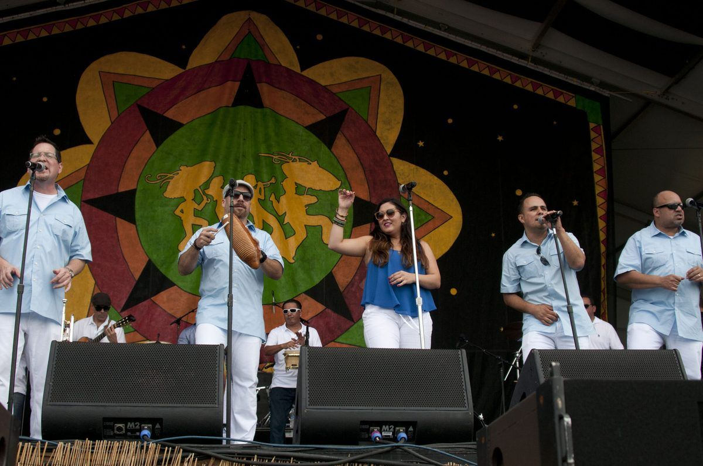
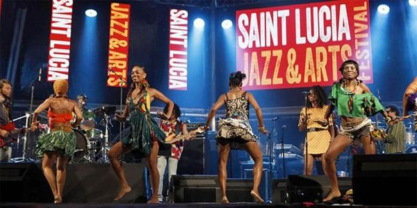
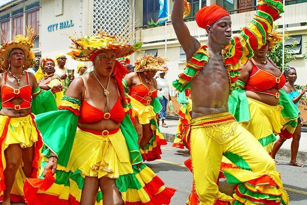
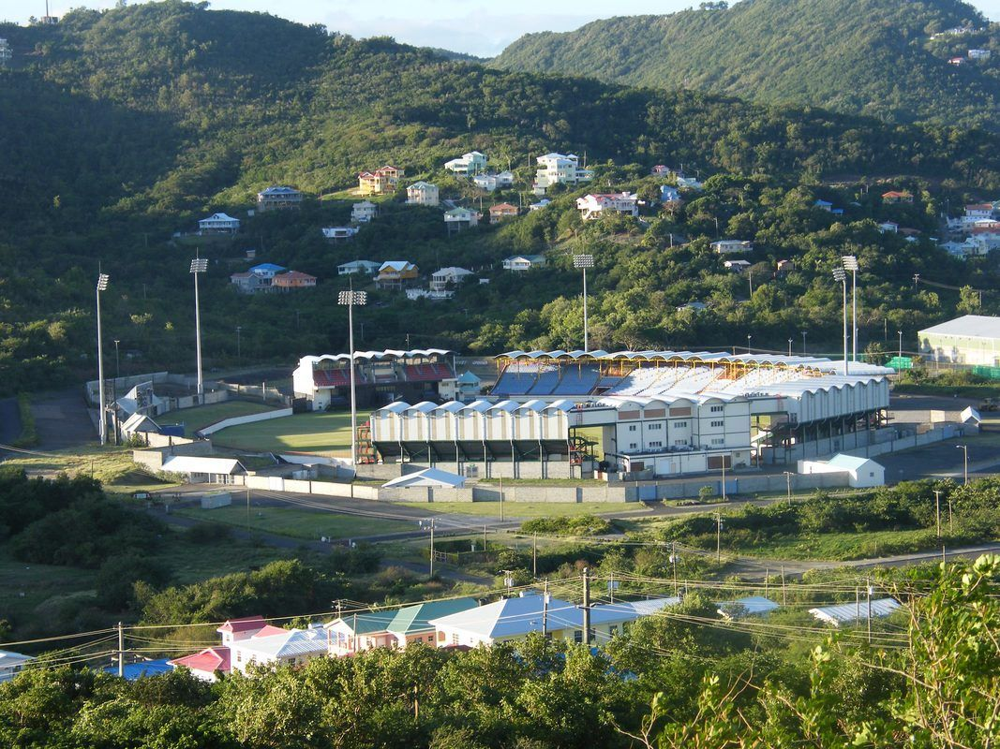
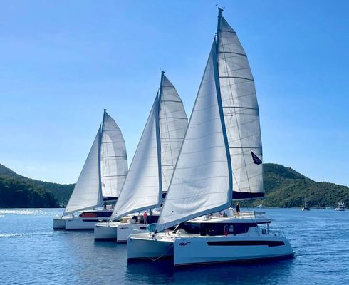
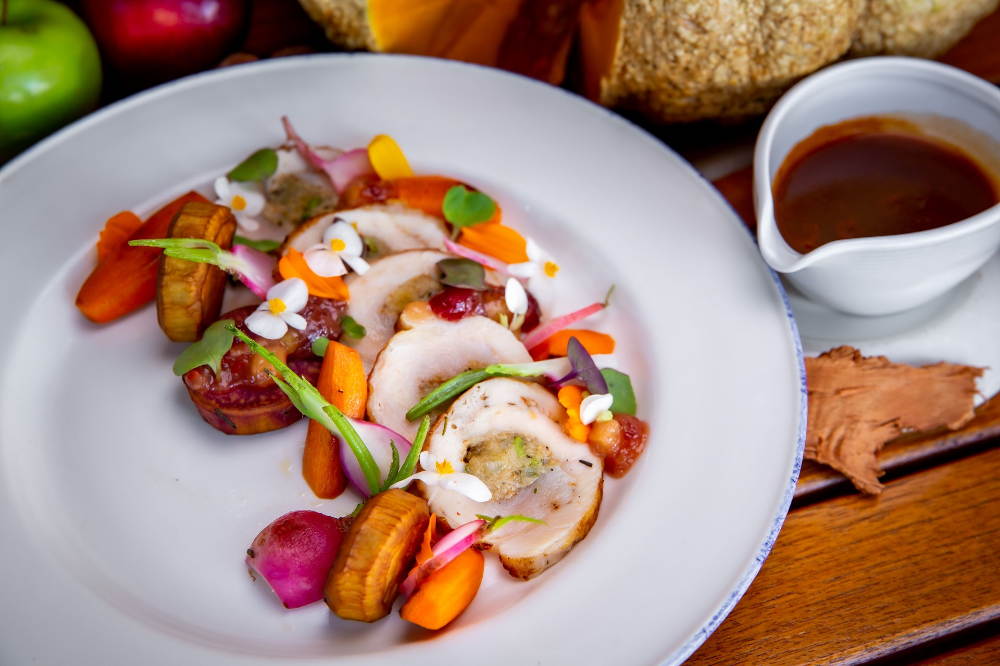
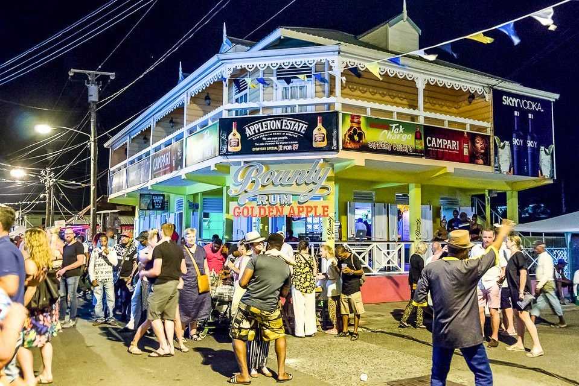

Tourism & Business Seasons
Public Holidays 2025–2026
2025 (13 Public Holidays)
| Date | Day | Holiday | Type |
|---|---|---|---|
| January 1 | Wednesday | New Year's Day | Fixed |
| January 2 | Thursday | Day After New Year's | Fixed |
| February 22 | Saturday | Independence Day | Fixed — 46th anniversary |
| April 18 | Friday | Good Friday | Moveable (Easter) |
| April 21 | Monday | Easter Monday | Moveable |
| May 1 | Thursday | Labour Day | Fixed |
| June 9 | Monday | Whit Monday | Moveable (49 days after Easter) |
| June 19 | Thursday | Corpus Christi | Moveable (60 days after Easter) |
| August 1 | Friday | Emancipation Day | Fixed — end of slavery |
| October 6 | Monday | Thanksgiving Day | Fixed (1st Monday in October) |
| December 13 | Saturday | National Day (Saint Lucy's Day) | Fixed — Festival of Lights |
| December 25 | Thursday | Christmas Day | Fixed |
| December 26 | Friday | Boxing Day | Fixed |
2026 (13 Public Holidays + 2 In-Lieu Days)
| Date | Day | Holiday | Type |
|---|---|---|---|
| January 1 | Thursday | New Year's Day | Fixed |
| January 2 | Friday | Day After New Year's | Fixed |
| February 22 | Sunday | Independence Day | Fixed — 47th anniversary |
| February 23 | Monday | Independence Day (in lieu) | Substitute |
| April 3 | Friday | Good Friday | Moveable |
| April 6 | Monday | Easter Monday | Moveable |
| May 1 | Friday | Labour Day | Fixed |
| May 25 | Monday | Whit Monday | Moveable |
| June 4 | Thursday | Corpus Christi | Moveable |
| August 1 | Saturday | Emancipation Day | Fixed |
| October 5 | Monday | Thanksgiving Day | Fixed (1st Monday in October) |
| December 13 | Sunday | National Day | Fixed |
| December 14 | Monday | National Day (in lieu) | Substitute |
| December 25 | Friday | Christmas Day | Fixed |
| December 26 | Saturday | Boxing Day | Fixed |
Business Impact
Government offices, banks, and most businesses close on public holidays. When a fixed holiday falls on a Sunday, the following Monday is observed as the public holiday (in lieu). Moveable holidays (Good Friday, Easter Monday, Whit Monday, Corpus Christi) shift each year based on Easter. December is busy with multiple holidays — expect reduced business activity from mid-December through early January.
Major Annual Events & Festivals


Nobel Laureate Festival
Celebrates Saint Lucia's two Nobel Laureates: Sir Derek Walcott (Literature, 1992) and Sir W. Arthur Lewis (Economics, 1979). Lectures, literary readings, cultural events, and school programmes.
FestivalIndependence Day Celebrations
National celebrations marking independence from Britain (1979). 2025 theme: “Douvan Ansanm — Health and Well-Being for a Prosperous Nation.” Flag raising & fireworks at Heroes Park (Feb 21 evening), military parade at Mindoo Philip Park, “Annou We-y” afternoon parade through Castries, Seafood Festival.
2026: February 22, 2026 — 47th anniversary of independence. As it falls on a Sunday, Monday February 23 is the observed public holiday (in lieu).
Public HolidaySaint Lucia Jazz & Arts Festival
The premier jazz festival in the Caribbean. Main stage at Pigeon Island National Landmark (open-air waterside). 2025 was record-breaking, headlined by John Legend, Earth Wind & Fire, Beenie Man, and Bounty Killer. “Art & The City” transforms Castries into an open-air gallery with live art, spoken word, and folk performances. Peak hotel occupancy and excellent networking.
2026 Theme: “Timeless Rhythms, Boundless Artistry.” Dates: April 30 – May 10, 2026 (6 main-stage nights). Art and the City: April 25 – May 16, 2026.
2026 Confirmed Headliners: Tems (Nigerian Grammy winner), Ella Mai, Monica & Brandy (R&B legends, joint headline set). Also performing: Billy Ocean, Beverley Knight, Branford Marsalis Quartet, Esperanza Spalding, Skip Marley, Capleton, The Original Wailers, Tye Tribbett.
6-Night Main-Stage Schedule: Night 1 (Apr 30): Opening Night — Skip Marley, The Original Wailers, Capleton. Night 2 (May 1): Jazz & Soul — Branford Marsalis Quartet, Esperanza Spalding. Night 3 (May 2): Tems (headline). Night 4 (May 3): Ella Mai (headline), Beverley Knight. Night 5 (May 9): Monica & Brandy (co-headline). Night 6 (May 10): Grand Finale — Billy Ocean, Tye Tribbett. *Lineup and schedule subject to change.
Festival Business NetworkingLucian Carnival
The island's biggest event. National Carnival Queen Pageant, Groovy & Power Soca Monarch, Calypso & Panorama finals, J'Ouvert (dawn street party from 4 AM), and the Parade of the Bands through Castries. 24,500 visitor arrivals during Carnival 2025 — a 36% increase from 18,000 in 2024 — generating an estimated EC$100 million in economic impact. Additional flights added from Miami and New York to meet demand.
2025 Results: Band of the Year: Tribe of Twel (defending, 436 points). Power Soca Monarch: Dezral. Calypso Monarch: Dezral (double crown). Carnival Queen: Miss Bank of St. Lucia, Emerle Tisson.
2026 Dates: July 1–23, 2026 | Parade Days: July 21-22
FestivalChocolate Heritage Month
Celebrating Saint Lucia's cacao heritage. Cocoa farm tours at estates like Fond Doux and Rabot, resort chocolate-pairing packages, artisan chocolate workshops, bean-to-bar demonstrations, and culinary experiences across the island. Organised by the Saint Lucia Tourism Authority and local cocoa producers.
FestivalLa Rose Festival (Gwan Fet Lawoz)
Cultural celebration of the La Rose flower society (representing English/British influence). Members dress in red and process through communities with songs, dance, and feasting. UNESCO-recognised intangible cultural heritage.
CulturalFood & Rum Festival / Rum & Roots
Celebration of Saint Lucian cuisine and rum culture. Celebrity chefs, international food critics, rum tastings, culinary competitions, and local food vendors. The Rum & Roots event (September 2025) at Jade Mountain brings together distillers, mixologists, and culinary talent in an iconic Pitons-view setting.
Nina Compton — Saint Lucia-born, James Beard Award-winning chef — published her first cookbook in April 2025, bringing renewed international attention to Saint Lucian culinary traditions.
FestivalLa Marguerite Festival (La Magewit)
Counterpart to La Rose, representing French influence. Members dress in blue/violet for traditional Creole ceremonies, music, and community gatherings. Together with La Rose, recognised by UNESCO for intangible cultural heritage (ICH Ref 02456). 2025: Held in La Resource, Dennery.
CulturalCreole Heritage Month / Jounen Kweyol
Month-long celebration of Creole culture, language, food, and music since 1981 — officially Mwa Ewitaj Kweyol (Creole Heritage Month). 2025 theme: “Kweyol Se Fos Nou” (Creole Is Our Strength). Kicks off October 1 with Oktoberfest en Kweyol. Highlights: Woulelaba Festival, La Wenn Kweyol Pageant, seminars, art exhibitions, culinary experiences, and concerts. The grand finale Jounen Kweyol was held on October 26, 2025 in designated host communities — 2025 hosts: Babonneau and Belle Vue. 2026: October 25, 2026 (expected). Neighbouring Dominica hosts the World Creole Music Festival the same month — Caribbean travellers often combine both.
CulturalDiwali (Festival of Lights)
Celebrated by Saint Lucia's small but vibrant Hindu and Indo-Caribbean community. Private gatherings, prayers, and community events with traditional lighting of diyas (oil lamps), rangoli art, sweets, and cultural performances. Some hotels and restaurants offer Diwali-themed menus. Date follows the Hindu calendar (Oct 20, 2025; Nov 8, 2026).
CulturalSLHTA Tourism Awards
The Saint Lucia Hospitality & Tourism Association (SLHTA) hosts annual tourism awards recognising outstanding service, innovation, and leadership in hospitality. The Tourism Legends Awards honour long-serving industry professionals. Networking reception and gala dinner attended by tourism stakeholders, government officials, and international partners.
Industry EventAtlantic Rally for Cruisers (ARC)
World's largest transatlantic sailing rally. ARC 2025 marks the 40th anniversary — 148 boats from 40+ nations crossing the Atlantic from Las Palmas to IGY Rodney Bay Marina. Crossing takes 14-21 days. Prizegiving ceremony is a high-profile social/networking event. Significant spending by the affluent sailing community.
2025: Fleet arrives ~Dec 10-15 (40th anniversary) | 2026: Prizegiving ~Dec 19
Sporting EventNational Day / Festival of Lights & Renewal
Saint Lucy's Day (patron saint). The Festival of Lights on December 12 evening illuminates Castries with decorative lights and lantern competitions, culminating in fireworks. Marks the beginning of the Christmas season. National Day (Dec 13) is a public holiday.
Public Holiday FestivalAnnual Sporting Events
 Daren Sammy National Cricket Stadium (15,000 capacity), home of the Saint Lucia Kings — Wikimedia Commons, CC BY-SA 3.0Eastern Caribbean Challenge Marathon
International marathon event (January 6, 2025). A 26-mile circuit attracting 35 elite runners from 15 nations. Part of a growing calendar of endurance events positioning Saint Lucia as a Caribbean running destination.
RunningPiton's Peak Challenge
Annual mass-start trail running race on New Year's week. Runners tackle the steep Gros Piton trail (2,619 ft) in Gros Islet. Part of the broader Three Peaks Challenge (Gros Piton, Petit Piton, and Mount Gimie at 3,117 ft). Requires excellent fitness and attracts ultra-running enthusiasts from across the region.
RunningSaint Lucia Golf Open
Relaunched in 2025 after a nine-year absence at the Sandals Cap Estate Golf & Country Club (Greg Norman-designed 18-hole course). Nearly 80 players from 16 territories competed across 3 days and 56 holes. Timed to precede the Jazz Festival (“Come For Golf, Stay For Jazz”). The Cabot Saint Lucia (Point Hardy) championship course opening nearby will further elevate the event.
2026: Weekend before Jazz Festival (late April)
GolfMango Bowl Regatta
Annual sailing regatta hosted by the Saint Lucia Yacht Club at Rodney Bay. Welcomes sailors from across the Caribbean and beyond. Four racing classes: Racing, J24/Surprise, Cruising I, and Cruising II. Social events and prizegiving at the yacht club.
SailingCPL Cricket — Saint Lucia Kings
The Saint Lucia Kings host Caribbean Premier League T20 matches at the Daren Sammy National Cricket Stadium in Gros Islet. Typically 4-5 home matches during August–September. Affordable tickets, electric atmosphere, and excellent networking opportunities with regional business leaders.
CPL 2024: Saint Lucia Kings won the CPL championship — the franchise's first title, sparking island-wide celebrations.
CPL 2025: Kings finished 1st in the group stage (9 wins, 3 losses) but were eliminated in Qualifier 2 by Trinbago Knight Riders, who went on to win the 2025 title. Breakout star Ackeem Auguste scored 73 off 35 balls in a standout innings.
2025: Home matches Aug 24-31 | Full tournament: Aug 15 – Sep 22
CricketSaint Lucia International Billfish Tournament
Presented by the St. Lucia Game Fishing Association and IGY Rodney Bay Marina, sponsored by Republic Bank. Five-day catch-and-release tournament attracting 130+ anglers from the UK, US, Antigua, Martinique, Barbados, Grenada, and Trinidad. Prizegiving ceremony is a high-profile social event.
FishingAtlantic Rally for Cruisers (ARC)
World's largest transatlantic sailing rally. ARC 2025 celebrates its 40th anniversary — 148 boats from 40+ nations crossing from Las Palmas to IGY Rodney Bay Marina after 14-21 days. Prizegiving ceremony brings affluent international sailing community. Estimated EC$10.3 million economic impact. The ARC fleet marks the start of the yachting high season.
2025: Fleet arrives ~Dec 10-15 (40th anniversary, 148 boats) | 2026: Prizegiving ~Dec 19
SailingSaint Lucia Premier Football League (SPFL)
The national club football league entered its Season 2 with 10 teams competing island-wide. La Clery are defending champions. Matches are played at the George Odlum Stadium (Vieux Fort) and other grounds. The stadium is undergoing a US$75 million rehabilitation funded by a Saudi loan, which will transform it into a modern multi-sport facility.
FootballRoad Races, Cycling & Fitness Events
The Saint Lucia Tourism Authority is developing a calendar of road races, cycling events, open-water swimming, triathlons, beach volleyball, and motocross to fill low-season gaps. Boxing, rugby, and bodybuilding regional championships are also planned. Check local listings for confirmed dates.
Multi-SportSaint Lucian Athletics Stars
Julien Alfred — Olympic Gold Medallist
Paris 2024 Olympic gold in the 100m — Saint Lucia's first-ever Olympic gold medal. Won bronze at the 2025 World Championships. Appointed Tourism Ambassador for Saint Lucia. A generational talent who has put Saint Lucian sprinting on the world map.
2026 Indoor Season: Opened with a commanding world-leading 7.00 seconds in the 60m final at the Woo Pig Classic (Fayetteville, Arkansas, February 8, 2026) — 7.04s in the heat, 7.00s in the final. Alfred is the fastest woman in the world over 60m in 2026 and holds the reigning World Indoor 60m Championship title. Her personal best of 6.94 seconds puts her just two-hundredths from Irina Privalova's 32-year-old world record of 6.92 seconds (set 1993).
Jady Emmanuel — CARIFTA Rising Star
Won 4 CARIFTA medals in 2025, including gold in both the 100m and 200m U17 — the first double CARIFTA sprint champion from Saint Lucia. Broke Julien Alfred's U18 100m record with a time of 11.50 seconds. Widely tipped as the next Saint Lucian to make an impact on the world stage.
Sports Administration & Other Milestones
Lyndon Cooper — CONCACAF Vice President
Lyndon Cooper of Saint Lucia was elected CONCACAF Vice President — a historic milestone for Caribbean football. Cooper's election elevates Saint Lucia's voice in the governance of football across North America, Central America, and the Caribbean, and underscores the growing influence of small-island nations in international sports administration.
OECS Boxing Champion 2025
A Saint Lucian boxer captured the OECS Boxing Championship in 2025, adding to the island's growing multi-sport profile. Boxing has been gaining grassroots support, with local gyms producing competitive regional talent. The achievement strengthens Saint Lucia's case for inclusion in Caribbean-wide combat sports events.
Sports Tourism Opportunity
Saint Lucia is actively targeting the multi-billion-dollar sports tourism market. Key facilities include the Daren Sammy National Cricket Stadium (15,000 seats), Sandals Cap Estate Golf & Country Club, the upcoming Cabot Saint Lucia golf resort, IGY Rodney Bay Marina (253 berths), and the George Odlum Stadium (undergoing US$75M rehabilitation). Julien Alfred's Olympic gold, Jady Emmanuel's CARIFTA dominance, the Kings' CPL 2024 championship, and Lyndon Cooper's election as CONCACAF Vice President have collectively elevated the island's sporting profile. The government is creating new signature sporting events to attract visitors during the traditionally quieter green season (July–November).
Yachting, Marinas & Sailing Tourism
Saint Lucia is one of the premier yachting destinations in the Eastern Caribbean, anchored by two world-class marinas and the annual arrival of the ARC transatlantic fleet. The yachting season (November–May) overlaps with the tourism high season and brings affluent, long-stay visitors.
Major Marinas
| Marina | Location | Berths | Max Vessel | Key Features |
|---|---|---|---|---|
| Rodney Bay Marina (IGY) | Rodney Bay, Gros Islet | 253 slips | 285 ft | Full-service: fuel, water, electricity, pump-out, Wi-Fi. 75-ton travel lift boatyard. Adjacent to Rodney Bay Village (restaurants, shops, nightlife). ARC finish line. One of the premier marinas in the Eastern Caribbean. |
| Marigot Bay Marina | Marigot Bay | 42 slips | 280 ft | Luxury resort and marina combined. Natural hurricane hole — excellent storm protection. Quieter, more exclusive atmosphere. Often called the most beautiful bay in the Caribbean. |
ARC — Atlantic Rally for Cruisers
The world's largest ocean-crossing rally: Las Palmas (Canary Islands) to Rodney Bay, Saint Lucia. The ARC 2025 (40th anniversary) saw approximately 148 boats participate. The fleet arrives in December after a 14-21 day crossing, with prizegiving celebrations at IGY Rodney Bay Marina providing a major economic boost for local businesses.
Charter Licenses & Cruising Permits
Charter & Sailing Licenses
- Charter yacht licenses: EC$200 – EC$1,350 depending on vessel size and duration
- Day-sail operators must register with SLASPA (Saint Lucia Air & Sea Ports Authority)
- International Certificate of Competence (ICC) or equivalent recommended
- Bareboat and crewed charter options available
Ports of Entry (5)
- Rodney Bay
- Castries
- Marigot Bay
- Soufriere
- Vieux Fort
Immigration and customs clearance required on arrival at any designated port of entry.
Yachting Business Opportunities
- Yacht charter companies — bareboat and crewed charters for the growing luxury market
- Marine repair & maintenance — Rodney Bay's 75-ton travel lift supports a full-service boatyard
- Provisioning services — food, fuel, and supplies for transiting yachts
- Sailing schools & day-sail tours — catamaran day sails to Soufriere are among the island's most popular excursions
- Crew placement agencies — servicing the charter and superyacht fleet
Sailing Events Calendar
June: Mango Bowl Regatta (Saint Lucia Yacht Club, Rodney Bay) — Caribbean-wide racing. September: Billfish Tournament (IGY Rodney Bay, 130+ anglers). November–December: ARC fleet arrival (~148 boats, 40+ nations). The yachting high season runs from November through May, peaking during the ARC arrival and the Rodney Bay festive period.
Sources: IGY Marinas, World Cruising Club, Saint Lucia Tourism Authority
Wedding & Event Tourism
Saint Lucia has been named the World's Leading Honeymoon Destination 17 times by the World Travel Awards. The iconic Pitons backdrop, no residency requirement for marriage, and a robust resort wedding infrastructure make the island one of the Caribbean's top wedding destinations.
Marriage License Requirements
| Item | Detail |
|---|---|
| Residency requirement | None — can marry on day of arrival |
| Regular license fee | EC$335 (~US$124) — documents submitted 2+ working days before ceremony |
| Express license fee | EC$540 (~US$200) — same-day or next-day processing |
| Required documents | Valid passport, birth certificate, decree absolute (if divorced), death certificate of former spouse (if widowed), parental consent (if under 18) |
| Officiant | Registered marriage officer (religious or civil) |
| Witnesses | 2 required |
Wedding Cost Ranges
Typical Costs
- Average destination wedding: ~US$8,900
- Simple beach ceremony: from US$3,000
- Resort wedding package: US$2,500 – US$15,000 (ceremony + basic reception)
- Luxury full wedding: US$50,000+
Popular Wedding Resorts
- Jade Mountain (Soufriere)
- Sugar Beach, A Viceroy Resort
- Sandals (3 locations)
- Ladera Resort
- Cap Maison (Cap Estate)
Wedding Business Opportunities
- Wedding planning & coordination — destination wedding planners specialising in Saint Lucia
- Photography & videography — drone and Pitons-backdrop specialists in high demand
- Floral arrangements — tropical flowers (heliconia, bird of paradise, anthurium)
- Catering & event coordination — Creole fusion menus popular with destination couples
- Entertainment — live bands, DJs, steel pan ensembles
- Luxury transportation — bridal transfers, vintage car hire
- Bridal boutiques & rental — underserved niche on-island
Growing Capacity
Over 2,000 new hotel rooms are expected from developments including Canopy by Hilton, Dreams, Secrets, and other projects, significantly increasing capacity for large wedding parties and group events. The dedicated Meetings & Incentives desk at the Saint Lucia Tourism Authority assists event planners with venue selection and logistics: stlucia.org/getting-married.
Sources: Saint Lucia Tourism Authority, Government of Saint Lucia Marriage License, World Travel Awards
Creole Culture, Food & Lifestyle
Saint Lucia's cultural identity is deeply rooted in its Creole heritage — a fusion of African, French, and British influences shaped by centuries of colonial history. Understanding local culture is essential for business visitors and investors alike.
Language
The official language is English, used for all business, legal, and government affairs. However, Kweyol (Antillean Creole French) is widely spoken, especially in rural areas and among older generations. Most Saint Lucians are bilingual. The French Creole heritage reflects 18th-century colonial history — French place names (Soufriere, Gros Islet, Vieux Fort) and cultural traditions persist throughout the island.
National & Local Cuisine
| Dish | Description |
|---|---|
| Green Fig & Saltfish (National Dish) | Green (unripe) bananas boiled, served with salted codfish sauteed with onions, peppers, and tomatoes. Found at most local restaurants and homes. |
| Bouyon | Hearty stew with ground provisions (dasheen, yam, plantain), dumplings, and meat or fish. |
| Accra | Fried saltfish fritters — popular street food and appetiser. |
| Callaloo Soup | Thick soup made from dasheen leaves, okra, coconut milk, and seasoning. |
| Lambi (Conch) | Grilled, curried, or in Creole sauce — a Caribbean delicacy. |
| Pelau | One-pot rice with chicken and pigeon peas — comfort food staple. |
| Breadfruit | Roasted, fried, or in salad. Introduced in the 18th century and now a dietary staple. |
| Cocoa Tea | Traditional hot chocolate made from locally grown cocoa — spiced with cinnamon and nutmeg. |
| Bakes | Fried dough, served as breakfast or street snack, often with saltfish or cheese. |
Rum & Spirits — Saint Lucia Distillers
Based in the Roseau Valley, Saint Lucia Distillers (founded 1931) produces the island's signature rums. Distillery tours are a major tourist attraction. Rum is deeply embedded in Saint Lucian culture and socialising.
Chairman's Reserve
Premium aged rum — the most famous Saint Lucian rum internationally. Available in Original, Finest, and "The Forgotten Casks" expressions.
Admiral Rodney
Ultra-premium, award-winning aged rum. Named after the British admiral who defeated the French at the Battle of the Saintes (1782) off Saint Lucia.
Bounty Rum
The everyday popular rum of Saint Lucia. Affordable and widely consumed locally.
1931
Limited edition celebrating the year the distillery was founded. Collector's item.
Dennery Segment (Kuduro)
A music genre unique to Saint Lucia, originating in the fishing village of Dennery. High-energy dance music with African-influenced beats, it has achieved growing regional and international recognition. The genre is a source of national pride and features prominently at Carnival and local fetes.
Outdoor & Nature Experiences
| Experience | Location | Details |
|---|---|---|
| Gros Piton Hike | Soufriere (UNESCO World Heritage Site) | ~US$60 with mandatory local guide. Strenuous 2-3 hour climb to 2,619 ft summit. |
| Sulphur Springs | Soufriere | World's only drive-in volcano. Geothermal pools, mud baths, guided tour. |
| Tet Paul Nature Trail | Soufriere | Pitons viewpoint — easier alternative to the Piton hike. Medicinal plant gardens. |
| Sugar Beach / Anse Chastanet | Between the Pitons | Iconic twin-Piton beach. World-class snorkelling on the reef. |
| Pigeon Island | Gros Islet | Historical British fortress, beaches, hiking trails. Venue for the Jazz Festival. |
| Underwater Sculpture Park | Anse Chastanet / Soufriere | Submerged art installation featuring sculptural works on the seabed, accessible by snorkelling or diving. A unique fusion of art and marine conservation — the sculptures create artificial reef habitat. One of Saint Lucia's newest tourist attractions, drawing art and dive enthusiasts alike. |
| Friday Night Street Party | Gros Islet | Weekly open-air party with street food, music, and dancing. The island's quintessential local experience. |
Cultural Festivals at a Glance
Jounen Kweyol (Creole Day): Last Sunday of October — communities host Creole food, music, dance, and craft exhibitions. Largest celebrations in Choiseul, Anse la Raye, and Dennery. A week-long Creole Heritage Month precedes it. Carnival: July — Parade of the Bands, soca competitions, j'ouvert. Jazz & Arts Festival: May — international artists at Pigeon Island.
Sources: Saint Lucia Tourism Authority, Saint Lucia Distillers
Heritage Sites & UNESCO World Heritage
Saint Lucia possesses an extraordinary concentration of natural and historical landmarks for an island of just 238 square miles. From a UNESCO World Heritage Site to colonial fortifications and geological wonders, these sites are central to the island's cultural identity and tourism economy.
Pitons Management Area — UNESCO World Heritage Site
Inscribed 2004 — UNESCO Criteria (vii) and (viii)
The Pitons Management Area (PMA) was inscribed as a UNESCO World Heritage Site in 2004, encompassing 2,909 hectares of the southwestern coast near Soufriere. The site includes the iconic twin volcanic spires of Gros Piton (770m / 2,530 ft) and Petit Piton (743m / 2,438 ft), rising dramatically from the Caribbean Sea. The PMA also encompasses the Sulphur Springs volcanic area, tropical moist and subtropical wet forest, a geothermal field with fumaroles and hot springs, and a diverse marine environment with coral reefs and fringing reef systems.
The area supports at least 148 plant species (8 rare), 27 bird species (5 endemic), indigenous rodent species, and 60+ species of finfish along the coral reefs. The Pitons are formed from volcanic plugs associated with the remnant Soufriere Volcanic Centre — one of the finest examples of volcanic features in the Lesser Antilles arc.
Visitor access: Gros Piton can be climbed with a mandatory licensed guide (~US$50-60 per person, 2-3 hours each way). Petit Piton is a technical climb requiring ropes and is rarely permitted. The Sulphur Springs “drive-in volcano” charges EC$20 adult admission. Best visited early morning to avoid midday heat.
Major Cultural & Heritage Sites
| Site | Location | Significance | Visitor Info |
|---|---|---|---|
| Pigeon Island National Landmark | Gros Islet (connected by causeway) | 44-acre national park and former British military stronghold. Fort Rodney (1780s) commanded the channel between Saint Lucia and Martinique. From here, Admiral Rodney launched the 1782 Battle of the Saintes, defeating the French fleet. Includes two fortified hills, officers' quarters, powder magazine, and the Interpretive Centre (Josset Building). Archaeological evidence of Amerindian (Arawak) settlement dating to AD 1000. | Open daily 9 AM – 5 PM. Admission: EC$20 adults, EC$10 children. Home of the Saint Lucia Jazz & Arts Festival main stage. Beaches, hiking trails, restaurant/bar. Allow 2-3 hours. |
| Diamond Falls Botanical Gardens & Mineral Baths | Soufriere (Soufriere Estate) | Established in 1784 under a land grant from King Louis XVI of France. The baths were originally built for the troops of the French garrison to bathe in the mineral-rich waters heated by the nearby Sulphur Springs. The waterfall displays a striking multi-coloured mineral cascade — yellow, green, and black from copper, iron, and manganese deposits. The 6-acre gardens feature tropical flora, heritage cacao trees, and medicinal plants. | Open Mon-Sat 10 AM – 5 PM, Sun 10 AM – 3 PM. Admission: EC$20 adults (gardens & falls), EC$15 mineral bath. One of the oldest botanical gardens in the Caribbean. |
| Morne Fortune | South of Castries | The “Hill of Good Fortune” — a strategic hilltop that changed hands 14 times between Britain and France. Site of the 1796 Battle of Rabot (also called the Inniskilling Monument), where the 27th Regiment of Foot stormed the French positions. The Inniskilling Monument commemorates the fallen soldiers. Ruins of Fort Charlotte and the former military barracks (now housing government offices and the Sir Arthur Lewis Community College). Panoramic views of Castries Harbour. | Free access. The Apostles Battery (four 18th-century cannons) overlooks the harbour. Best at sunset for photographs. Allow 1-2 hours including the Inniskilling Monument and Fort Charlotte ruins. |
| Fond Latisab Creole Park | Babonneau (interior) | A living heritage park preserving traditional Creole rural life. Demonstrations of manioc (cassava) processing, traditional cooking methods, log sawing, folk games, drumming, and storytelling. Operated by the community and the Folk Research Centre. Particularly active during Jounen Kweyol. | Open by arrangement / during Creole Heritage Month. Best experienced during Jounen Kweyol (October). Contact the Folk Research Centre: +1 758 452 2279. |
| Sulphur Springs | Soufriere | The world's only “drive-in volcano” — an active geothermal area within the collapsed Qualibou caldera. Fumaroles, boiling mud pools, and sulphur vents. The caldera last erupted circa 1766 (phreatic eruption). The adjacent hot springs and mud baths are believed to have therapeutic properties. Major component of the Pitons Management Area / UNESCO site. | Open daily. Admission: EC$20 adults. Guided tour mandatory. Mud baths separate fee. Do not touch boiling pools. Strong sulphur smell (hydrogen sulphide). |
| Mamiku Gardens | Micoud (east coast) | 12-acre historic estate and botanical garden. Site of a 1796 battle between the British and the Brigands (enslaved people's resistance force allied with the French). Ruins of the 18th-century estate house. Named after Baron de Micoud, a French colonial governor. Features Mystic Garden, Secret Garden, and Grandpa's Garden trails with heritage tropical plants. | Open Mon-Fri 9 AM – 5 PM. Admission: EC$30 adults. Guided tours available. Bird-watching opportunities (endemic species). |
| Toraille Waterfall | Soufriere (inland road) | A 50-foot waterfall cascading into a garden pool, surrounded by tropical rainforest. Popular as a refreshing stop en route between the Sulphur Springs and Diamond Falls. The pool is warm due to geothermal heating. | Admission: EC$10 adults. Bring swimwear. Changing facilities available. |
| Balenbouche Estate | Choiseul (southwest) | Historic 18th-century French colonial plantation with Amerindian petroglyphs carved into riverside boulders — pre-Columbian rock art attributed to the Island Carib (Kalinago) or earlier Arawak peoples. Plantation ruins, heritage cottage accommodation, organic farming, and river trail. | Open for tours by arrangement. Heritage cottages available for overnight stays. Contact: +1 758 455 1244. |
Amerindian Heritage
Saint Lucia was first inhabited by the Arawak (Taino) people from approximately 200 AD, followed by the Island Carib (Kalinago) from around 800 AD. The Kalinago called the island “Iouanalao” (Place of the Iguanas) or “Hewanorra” — the name now used for the international airport. Archaeological evidence of Amerindian settlement has been found at Pigeon Island (pottery, tools dating to ~AD 1000), the Grande Anse site on the northeast coast, and Lavoutte. Petroglyphs at Balenbouche Estate and Stonefield Villa Resort (Soufriere) are among the most accessible pre-Columbian rock art on the island.
Nobel Laureates & Literary Heritage
Saint Lucia holds the extraordinary distinction of having produced two Nobel Prize laureates from a population of under 180,000 — the highest per-capita Nobel count of any sovereign nation. This remarkable achievement is celebrated annually and is central to the island's cultural identity.
Sir W. Arthur Lewis (1915–1991) — Nobel Prize in Economics, 1979
Born in Castries on January 23, 1915. Lewis pioneered the “dual economy” model of economic development, explaining how traditional agricultural economies transition to industrialised economies — foundational work for development economics. His seminal paper, “Economic Development with Unlimited Supplies of Labour” (1954), remains one of the most cited works in economics. Knighted in 1963. Served as the first president of the Caribbean Development Bank (CDB) from 1970 to 1973. Taught at the London School of Economics, Manchester, and Princeton. A building at the Sir Arthur Lewis Community College (SALCC) in Morne Fortune honours his legacy, as does the annual Nobel Laureate Festival.
Key works: The Theory of Economic Growth (1955), Economic Development with Unlimited Supplies of Labour (1954).
Sir Derek Walcott (1930–2017) — Nobel Prize in Literature, 1992
Born in Castries on January 23, 1930 — remarkably, the same birthday as Arthur Lewis. Walcott's work explored Caribbean identity, colonialism, and the tensions between European and African heritage with lyricism that earned him comparisons to Virgil and Homer. His magnum opus, Omeros (1990), reimagines Homer's Odyssey through the lives of Saint Lucian fishermen. The Nobel Committee cited his “poetic oeuvre of great luminosity, sustained by a historical vision, the outcome of a multicultural commitment.” Walcott also founded the Trinidad Theatre Workshop (1959) and was a noted visual artist (watercolours of Caribbean landscapes).
Key works: Omeros (1990), Dream on Monkey Mountain (1967), Collected Poems (1986), The Bounty (1997).
Nobel Laureate Festival & Cultural Legacy
The Nobel Laureate Festival (January) and Nobel Laureate Week celebrate the island's laureates through public lectures, literary readings, school poetry competitions, art exhibitions, and panel discussions. Derek Walcott Square in central Castries (formerly Columbus Square) was renamed in the poet's honour. The massive Samphire Tree (Saman tree) in the square, under which Walcott reputedly sat and wrote, is a literary landmark. Saint Lucia's literary tradition continues through the Folk Research Centre (FRC), local poets and playwrights, the annual M&C Fine Arts Exhibition, and the growing spoken-word scene at the Jazz & Arts Festival's Art and the City programme.
Music Traditions & Performance Culture
Saint Lucian music reflects the island's layered colonial history and African heritage. Beyond the internationally known Jazz Festival, the island sustains a vibrant and diverse musical ecosystem rooted in folk, calypso, soca, zouk, and a uniquely local genre born in a fishing village.
| Genre / Tradition | Origins & Character | Where to Experience |
|---|---|---|
| Calypso | Rooted in West African griot traditions and adapted during slavery as a vehicle for social commentary, satire, and political critique. Saint Lucian calypsonians compete annually for the Calypso Monarch crown during Carnival. Lyrics address social issues, government policy, and community gossip with wit and double entendre. Calypso “tents” (venues for pre-Carnival competition rounds) are a uniquely Caribbean cultural institution. | Carnival season (June-July). Calypso semi-finals and finals at national venue. Tents in communities across the island. |
| Soca & Power Soca | The high-energy carnival music born from calypso. Groovy soca (melodic, mid-tempo) and power soca (driving, high-BPM) dominate Carnival and fetes. The Soca Monarch competition is one of Carnival's most anticipated events. Saint Lucian soca artists such as Teddyson John and Dezral (2025 double monarch — Power Soca and Calypso) have regional reach. | Carnival J'Ouvert (dawn street party), Soca Monarch finals, Parade of the Bands, year-round at fetes. |
| Dennery Segment (Kuduro) | A genre unique to Saint Lucia, originating in the fishing village of Dennery on the east coast. Characterised by driving, repetitive electronic beats influenced by Angolan kuduro, combined with Kweyol chanting. The genre emerged in the 2000s and has achieved growing recognition beyond the island. Artists like Freezy and Motto are credited as pioneers. Dennery Segment has become a powerful expression of grassroots Saint Lucian identity. | Carnival fetes, Dennery Fish Fiesta (Saturday), Jounen Kweyol, local clubs year-round. |
| Zouk | Influenced by the French Antillean zouk of neighbouring Martinique and Guadeloupe (popularised by Kassav'). Saint Lucia's French Creole heritage means zouk resonates deeply. Romantic, rhythmic dance music sung in Kweyol or French. A staple at social gatherings, weddings, and cultural events. | Social events, nightclubs, La Rose and La Marguerite festivals, Jounen Kweyol, radio stations. |
| Folk Music & Drumming | Traditional folk music accompanies La Rose and La Marguerite ceremonies, storytelling sessions, and Creole Heritage Month events. Instruments include the ka drum (large skin drum of African origin), ti-bwa (rhythm sticks), shak-shak (gourd rattle / maracas), banjo, cuatro (four-string guitar), and the gwaj (metal grater scraped rhythmically). Call-and-response singing in Kweyol is central to folk performance. Konté (storytelling with song) is a cherished evening tradition. | Jounen Kweyol, La Rose (Aug 30), La Marguerite (Oct 17), Fond Latisab Creole Park, Folk Research Centre events. |
| Steel Pan (Steelband) | Originating in Trinidad, the steel pan has a strong presence in Saint Lucia. Panorama — the national steelband competition — is a major Carnival event. Steelbands perform at festivals, community events, weddings, and hotel entertainment programmes. Some schools include pan in their music curricula. The instrument's melodic versatility makes it central to national celebrations including Independence Day and National Day. | Carnival Panorama finals (July), Independence Day, National Day, hotel entertainment programmes. |
| Reggae & Dancehall | Jamaican reggae and dancehall have strong cultural influence across the Caribbean, including Saint Lucia. Local sound systems and DJs feature reggae and dancehall alongside soca and Dennery Segment. The Jazz & Arts Festival regularly includes reggae headliners — the 2026 opening night features Skip Marley, The Original Wailers, and Capleton. | Jazz Festival, Gros Islet Friday Night Jump-Up, local clubs, community events. |
Live Music Calendar
January: Nobel Laureate Festival (literary performances, spoken word). April–May: Jazz & Arts Festival — main stage at Pigeon Island plus Art and the City performances in Castries. June–July: Carnival — Calypso Monarch, Soca Monarch, Panorama (steelband competition), J'Ouvert. August: La Rose Festival (folk drumming, traditional song). October: Jounen Kweyol / Creole Heritage Month (folk music, ka drumming, konté). December: Festival of Lights (Christmas carolling, steelband). Weekly: Gros Islet Friday Night Jump-Up (DJs, sound systems), hotel live entertainment programmes, and occasional concerts at the National Cultural Centre.
Traditional Arts & Crafts
Saint Lucia maintains a living tradition of artisanal craftsmanship, particularly concentrated in the southwestern district of Choiseul. These traditions trace back to Amerindian, African, and European influences and are actively preserved through community workshops, the Folk Research Centre, and cultural festivals.
Choiseul — The Craft Village Capital
The village of Choiseul on the southwest coast is the undisputed centre of Saint Lucian handicraft production. The Choiseul Arts & Craft Centre houses artisans specialising in:
- Pottery: Hand-coiled clay pots (canari) using techniques passed down from Amerindian (Kalinago) traditions. The red-brown clay is sourced locally. Coal pots (chofye) for traditional cooking are a signature product.
- Basket weaving: Intricate baskets woven from roseau reed, bamboo, and latanye (palmetto) leaves. Techniques trace to both Amerindian and West African origins.
- Woodcarving: Carved bowls, masks, and decorative items from local hardwoods.
- Straw & palm work: Hats, mats, fans, and bags woven from dried palm fronds.
Visit the Centre during Jounen Kweyol (October) for live craft demonstrations and purchases direct from artisans.
Other Craft Traditions
- Madras cloth: The distinctive plaid fabric (originally from India, via the French colonial period) is central to traditional Creole dress. Worn during La Rose, La Marguerite, Jounen Kweyol, and Independence Day. The wob dwiyet (Creole national dress) uses brightly coloured madras with elaborate headtie (tete en l'air) arrangements signalling marital status.
- Calabash carving: Dried gourds carved and decorated as bowls, cups, and ornamental items — an Amerindian tradition preserved across the Caribbean.
- Batik & textile art: Several artists (notably at Bagshaw Studios in La Toc and Eudovic Art Studio in Morne Fortune) produce silk-screen prints and batik fabrics with Caribbean botanical motifs.
- Cacao & chocolate artisanal production: Bean-to-bar chocolate made from heritage Trinitario cacao at estates including Fond Doux, Rabot Estate (Hotel Chocolat), and Morne Coubaril.
- Visual arts: The M&C Fine Arts Exhibition (annual), the Inner Gallery in Rodney Bay, and Art and the City during Jazz Festival showcase painting, sculpture, and mixed media by Saint Lucian artists. Derek Walcott's watercolour paintings of Caribbean landscapes have influenced a generation of local visual artists.
Where to Buy Authentic Saint Lucian Crafts
Choiseul Arts & Craft Centre (Choiseul) — pottery, basketwork, woodcarving. Castries Central Market (Castries, Saturday is best) — spices, crafts, clothing, hot sauce. Vendor's Arcade (opposite Castries Market) — souvenirs, jewellery, crafts. Eudovic Art Studio (Morne Fortune) — wood sculpture. Bagshaw Studios (La Toc) — silk-screen printed textiles. Caribelle Batik (Howelton Estate, Morne Fortune) — batik fabric and clothing. Cocoa farm gift shops (Fond Doux, Rabot) — artisanal chocolate, cocoa products. Look for the “Made in Saint Lucia” designation to ensure authenticity.
Kwéyòl Language & Cultural Preservation
Kwéyòl (also spelled Kweyol, Patwa, or Antillean Creole French) is the soul of Saint Lucian identity. Although English is the official language, Kwéyòl is the mother tongue for a significant share of the population, particularly in rural communities and among older generations. The language is a French-based creole with African grammatical structures and vocabulary from Carib, English, and Spanish.
Language History & Status
- Origins: Developed during the 17th-18th centuries on French-controlled plantations, as enslaved Africans adapted French to their own linguistic structures
- Mutual intelligibility: Saint Lucian Kweyol is mutually intelligible with the Creole of Martinique, Guadeloupe, Dominica, Haiti (partially), and French Guiana
- Official recognition: Kweyol is not officially co-equal with English but is used in some government communications, radio broadcasts (Radio Saint Lucia / Hot FM), and church services
- Written standard: An orthography was developed by the Folk Research Centre (FRC) in the 1980s and refined through OECS collaboration. A Kweyol-English dictionary has been published
- UNESCO status: Classified as “vulnerable” — use is declining among younger, urban Saint Lucians who increasingly default to English
Preservation Efforts
- Folk Research Centre (FRC): The primary institution for Kweyol preservation, research, and promotion. Located in Mount Pleasant, Castries. Publishes Kweyol texts, organises cultural events, and advocates for language education
- Creole Heritage Month (October): Official month-long calendar of Kweyol-language events, competitions, and cultural activities — Mwa Ewitaj Kweyol
- Jounen Kweyol: Annual grand celebration (last Sunday of October) where designated communities host full-day Kweyol immersion events
- Radio & media: Several radio stations broadcast programmes in Kweyol. Local news segments and church services are conducted in the language
- School integration: Efforts to introduce Kweyol in primary school curricula are ongoing, though English remains the sole medium of instruction
- OECS cooperation: Collaboration with Dominica (which also speaks a nearly identical creole) on joint preservation and standardisation initiatives
Useful Kwéyòl Phrases for Visitors
| Kwéyòl | English | Pronunciation (approx.) |
|---|---|---|
| Bonjou | Good morning / Hello | bon-JOO |
| Bonswa | Good afternoon / Good evening | bon-SWA |
| Ki mannyè ou yé? | How are you? | kee man-NYAIR oo yay |
| Mwen byen, mèsi | I'm fine, thank you | mwen bee-EN, meh-SEE |
| Souplé | Please | soo-PLAY |
| Mèsi anpil | Thank you very much | meh-SEE ahn-PEEL |
| Wi / Non | Yes / No | wee / nohn |
| Konmen sa yé? | How much is it? | kon-MEN sa yay |
| Sa bon | That's good / That's fine | sa BOHN |
| Kweyol sé fos nou | Creole is our strength (2025 Jounen Kweyol theme) | kway-OL say foss noo |
Business Tip
Using even a few Kweyol phrases demonstrates cultural awareness and builds immediate goodwill with Saint Lucian counterparts. Opening a meeting with “Bonjou” or thanking someone with “Mèsi anpil” signals respect for local culture. For deeper engagement, the Folk Research Centre occasionally offers short Kweyol courses for visitors and expatriates.
La Rose & La Marguerite — The Flower Societies
The flower societies of La Rose and La Marguerite are among the most distinctive and enduring cultural institutions in the Caribbean. Unique to Saint Lucia, these rival fraternal organisations reflect the island's dual colonial heritage and are recognised by UNESCO as Intangible Cultural Heritage (ICH Ref 02456, inscribed 2023).
La Rose (Lawoz) — August 30
Allegiance: Symbolically associated with the English / British influence (the rose is England's national flower). Colour: Red.
Structure: Each La Rose chapter has a hierarchy mirroring a royal court — King, Queen, Prince, Princess, Police, Magistrate, Soldiers, and Nurses. Members wear elaborate red costumes and process through their communities with flags, drums, and song.
Festival: The Gwan Fet Lawoz (Grand Feast of the Rose) on August 30 is the culmination of months of rehearsals and community preparation. Processions begin with a church service, followed by a “séance” (formal gathering) with call-and-response singing in Kweyol, feasting, and dancing that can last through the night. Communities across the island host separate celebrations.
La Marguerite (La Magewit) — October 17
Allegiance: Symbolically associated with the French influence (the marguerite / daisy represents France). Colour: Blue / Violet.
Structure: Mirrors La Rose with a similar court hierarchy. Members wear blue or violet costumes. The rivalry between La Rose and La Marguerite is friendly but deeply felt — families and communities align with one society or the other, sometimes splitting households.
Festival: The Fèt La Magewit on October 17 features comparable processions, séances, and feasting. The 2025 celebration was held in La Resource, Dennery. As with La Rose, each community holds its own events with local variations.
Cultural Significance
The flower societies date to the 18th and 19th centuries, when Saint Lucia changed hands between Britain and France 14 times. The societies served as vehicles for cultural expression among the enslaved and free Black population, blending African secret society traditions with European court pageantry. They provided social structure, mutual aid, and community identity. Although participation has declined in some urban areas, rural communities in Choiseul, Dennery, Anse la Raye, Canaries, and Micoud maintain strong chapters. The UNESCO inscription in 2023 has reinvigorated interest and provided a framework for government support and preservation funding.
For visitors: La Rose (August 30) and La Marguerite (October 17) are among the most authentic and immersive cultural experiences available in the Caribbean. Visitors are welcomed at community celebrations. Contact the Folk Research Centre or Saint Lucia Tourism Authority for details on participating communities.
Culinary Heritage & Food Culture
Saint Lucian cuisine is a vivid expression of the island's multicultural history — African, French, British, Indian, and Amerindian influences converge in a tradition that emphasises fresh, locally sourced ingredients, bold spicing, and communal eating.
National Dish & Culinary Identity
Green Fig & Saltfish — The National Dish
Green fig (green, unripe bananas — called “fig” in Saint Lucian English) are boiled until tender and served with saltfish (salted cod) sauteed with onions, tomatoes, sweet peppers, and hot pepper. The dish reflects the island's plantation history: bananas were a cheap, abundant carbohydrate, while imported salted fish from the North Atlantic provided protein for enslaved workers. Today, it is served at breakfast or lunch across the island, from roadside stalls to resort restaurants. The dish is a source of deep national pride — prepared in homes for Sunday breakfast and served at national celebrations.
Traditional Cooking Methods & Heritage Foods
| Tradition | Description |
|---|---|
| Coal pot cooking (Chofye) | The traditional clay coal pot, handmade in Choiseul, is still used for slow cooking in rural households. Charcoal-fuelled, it imparts a distinctive smoky flavour. Coal pots are a symbol of Saint Lucian culinary heritage and are featured prominently at Jounen Kweyol demonstrations. |
| Farine (Cassava flour) | Processed from manioc (cassava) using techniques inherited from the Amerindian (Kalinago) inhabitants. The cassava is peeled, grated, pressed in a matapi (woven sleeve), and toasted on a flat griddle (platine). Farine is used in baking and as a side dish. Demonstrations at Fond Latisab Creole Park preserve this ancient process. |
| Cocoa processing & Cocoa Tea | Heritage Trinitario cacao trees (introduced in the 18th century) are harvested, fermented, dried, and roasted on estates like Fond Doux and Rabot. Traditional cocoa tea involves grating roasted cacao into hot water with cinnamon, nutmeg, and bay leaf — served sweetened with brown sugar. A staple morning drink in rural Saint Lucia. |
| Bread baking (Bakes & Pot bread) | Fried bakes (dough puffs) are a ubiquitous breakfast and street food. Traditional pot bread is baked in a cast-iron pot over a coal fire — a technique from the pre-oven era still practised by some rural bakers. Saturday mornings at the Castries Market are the best time to find fresh bakes. |
| Seasoning & spice blends | Saint Lucian “green seasoning” (a paste of chives, thyme, parsley, garlic, hot pepper, and sometimes shadow benne / chadon beni) is the base for most savoury dishes. Locally grown spices include nutmeg, cinnamon, bay leaves, turmeric, and ginger. The Castries Market spice vendors sell pre-mixed spice packets and hot pepper sauces. |
| Breadfruit | Introduced to the Caribbean in 1793 by Captain Bligh (of Mutiny on the Bounty fame) as food for enslaved populations. Now a beloved dietary staple — roasted over open flame, fried as chips, or prepared in salads. The breadfruit tree is a common feature of Saint Lucian homesteads. Breadfruit is also increasingly featured in fine-dining applications by chefs like Nina Compton. |
Culinary Tourism Experiences
Must-Visit Food Experiences
- Anse la Raye Friday Fish Fry: Fresh grilled seafood, lobster, and local food in a vibrant village street-party atmosphere. The best-known food event on the island.
- Castries Central Market (Saturday): Fresh produce, spices, hot sauce, cocoa sticks, and local snacks. Upstairs vendors serve plate lunches.
- Cocoa farm tours: Bean-to-bar chocolate making at Fond Doux, Rabot (Hotel Chocolat), and Morne Coubaril estates in Soufriere.
- Rum distillery tour: Saint Lucia Distillers (Roseau Valley) offers guided tours with tastings of Chairman's Reserve, Admiral Rodney, and Bounty Rum.
- Fond Latisab Creole Park: Traditional cassava processing, coal-pot cooking, and Creole cuisine demonstrations (by arrangement / during Jounen Kweyol).
Food Festivals & Events
- August: Chocolate Heritage Month — cocoa farm tours, chocolate-pairing menus, artisan workshops island-wide.
- September: Food & Rum Festival / Rum & Roots (Jade Mountain) — celebrity chefs, rum tastings, culinary competitions.
- October: Jounen Kweyol — the largest celebration of Creole cuisine, with traditional dishes prepared in host communities.
- Year-round: Nina Compton (Saint Lucia-born, James Beard Award-winning chef, cookbook author April 2025) has brought global attention to Saint Lucian flavours through her restaurants in New Orleans and media appearances.
Community Festivals & Cultural Calendar
Beyond the headline events, Saint Lucia sustains a rich calendar of community-level festivals, religious observances, and cultural gatherings that offer visitors authentic immersion into island life. Many of these events are free and open to all.
| Month | Event | Location / Details |
|---|---|---|
| January | Nobel Laureate Week | Island-wide — lectures, school competitions, art exhibitions, and literary readings honouring Arthur Lewis (birthday Jan 23) and Derek Walcott (birthday Jan 23). Derek Walcott Square (Castries) hosts public events. |
| February | Independence Day Celebrations | National — Flag raising (Feb 21 evening), military parade at Mindoo Philip Park, “Annou We-y” parade through Castries, community cultural shows, Seafood Festival. 2026: 47th anniversary (Feb 22, observed Monday Feb 23). |
| March–April | Easter Celebrations | Island-wide — strongly observed in this predominantly Roman Catholic nation. Good Friday processions, church services, kite flying (a Caribbean Easter tradition), family gatherings. Many businesses closed Good Friday through Easter Monday. |
| May | Feast of Corpus Christi | Catholic processions with flower petal carpets (alfombras) in communities across the island, particularly in Soufriere, Choiseul, and Anse la Raye. A public holiday (moveable: June 4, 2026). |
| June | Fisherman's Feast (Fèt Péchè) | Coastal communities — particularly Anse la Raye, Dennery, and Choiseul — celebrate with blessing of the boats, seafood cooking, music, and community gatherings. Coincides with the start of the open fishing season. |
| August 1 | Emancipation Day | National public holiday commemorating the abolition of slavery (1834). Cultural events, drumming, historical lectures, and community gatherings. Some communities host “freedom marches” and re-enactments. |
| August 30 | La Rose Festival (Gwan Fet Lawoz) | Communities island-wide — red-costumed processions, church services, séances (formal gatherings), feasting, drumming, and dancing. UNESCO Intangible Cultural Heritage. See Flower Societies section for details. |
| October 1–31 | Creole Heritage Month (Mwa Ewitaj Kweyol) | Month-long: Oktoberfest en Kweyol, Woulelaba Festival, La Wenn Kweyol Pageant, seminars, art exhibitions, concerts. Culminates in Jounen Kweyol (last Sunday). 2025 hosts: Babonneau and Belle Vue. |
| October 17 | La Marguerite Festival (Fèt La Magewit) | Blue/violet-costumed processions and celebrations. UNESCO Intangible Cultural Heritage. 2025: La Resource, Dennery. See Flower Societies section. |
| November 1–2 | All Saints' / All Souls' Day (Toussaint / Jou Mò) | Families visit cemeteries to clean and decorate graves, light candles, and pray. Cemeteries are illuminated at night with hundreds of candles — a visually striking tradition. Reflects deep Catholic and African ancestral reverence. |
| December 12–13 | Festival of Lights & National Day | Castries illumination, lantern competitions, fireworks (Dec 12 evening). National Day / Saint Lucy's Day (Dec 13) — public holiday. Dawn church services, cultural programmes, community events. Marks the start of the Christmas season. |
| December 16–24 | Christmas Novena & Parang | Nine nights of church services leading to Christmas. Séwinal (Saint Lucian Christmas carolling / parang) — groups of singers travel from house to house performing folk songs in Kweyol, often accompanied by guitar, cuatro, shak-shak, and drums. Homeowners offer food and drink. A cherished tradition that bridges African, French, and Catholic heritage. |
Religious & Spiritual Life
Saint Lucia is predominantly Roman Catholic (~60%), with significant Seventh-Day Adventist (~15%), Pentecostal, and other Protestant communities. Catholic traditions deeply influence the cultural calendar — from Corpus Christi processions to the All Saints' cemetery candle-lighting. Obeah (folk spiritual practices with African roots) persists in some communities, though it is rarely discussed publicly. Church attendance remains high, and Sunday is genuinely observed as a day of rest — most businesses are closed. Visitors should respect religious sensitivities and avoid scheduling business activities on Sundays.
Cultural Institutions & Resources
Folk Research Centre (FRC): Mount Pleasant, Castries — the leading institution for cultural preservation, Kweyol language, and folk traditions research. Phone: +1 758 452 2279. Cultural Development Foundation (CDF): Manages the National Cultural Centre and coordinates national cultural programmes. National Archives: Housed at the Government Buildings, Castries — historical records, maps, and colonial-era documents. Derek Walcott Square: Castries — public square named for the Nobel laureate, site of the landmark Samphire Tree. National Trust: Manages Pigeon Island National Landmark, Maria Islands Nature Reserve, and other heritage sites.
Sources: UNESCO World Heritage Centre, Folk Research Centre, Saint Lucia National Trust, Saint Lucia Tourism Authority, Cultural Development Foundation
Business Events & Conferences
| Event | Dates | Venue / Notes |
|---|---|---|
| Saint Lucia Business Forum 2025 | August 29-30, 2025 | Expo Salon, Saint Lucia. Hosted by Invest Saint Lucia. Theme: “Investing in Paradise: Unlocking Business Opportunities.” Tourism, manufacturing, agribusiness, and renewable energy panels. |
| Chamber of Commerce — CEO Ka Pale | Recurring (quarterly) | Exclusive panel discussion convening Caribbean business leaders. In collaboration with Sagicor Life. |
| Chamber Annual Business Awards | Applications due ~September | Recognises outstanding Saint Lucian businesses and entrepreneurs. |
| Caribbean Travel Marketplace (CHTA) | May 12-15, 2026 | Antigua & Barbuda. Largest Caribbean tourism B2B trade forum. |
| Taste of the Caribbean (CHTA) | Nov 16-19, 2026 | Barbados. Culinary and hospitality talent development. |
| Chamber of Commerce Monthly Mixers | Monthly (typically last Thursday) | Rotating venues across Rodney Bay and Castries. Informal networking for members and prospective members. Food and beverages provided. Registration via stluciachamber.org. |
| Invest Saint Lucia Investor Forums | Periodic (2-3 per year) | Hosted by Invest Saint Lucia at various hotel venues. Sector-specific briefings for prospective investors in tourism, agriculture, manufacturing, and renewable energy. One-on-one sessions with government agencies available. |
| OECS Business Council Meetings | Quarterly (rotating host island) | Organisation of Eastern Caribbean States private-sector coordination. When hosted in Saint Lucia, held at hotel conference facilities. Focuses on trade facilitation, OECS common market, and regional investment. |
| SLHTA Tourism Awards & AGM | March (AGM) / November (Awards) | Annual General Meeting (March) includes Tourism Legends Awards. Tourism Awards gala (November) recognises hospitality excellence. Attended by industry stakeholders and government officials. |
| ECCB / Banking & Finance Forum | Varies (annual) | Eastern Caribbean Central Bank regional conferences and financial sector workshops. Hosted in ECCB member territories on rotation. Topics include monetary policy, de-risking, fintech, and financial inclusion. |
| Rotary District 7030 Conference | May 2026 | Saint Lucia is hosting the 2026 Rotary District 7030 Conference. Rotarians from across the southern Caribbean — excellent networking with business and civic leaders. |
Conference Infrastructure
A 2,000-seat convention centre is being developed as part of the A'ila Resorts complex at Mount Pimard. Once operational, this will significantly expand Saint Lucia's capacity to host international conferences. Currently, major business events use hotel conference facilities (Bay Gardens, Royalton, Sandals) and the Expo Salon. The Chamber of Commerce is located at Orange Park Commercial Building, Bois D'Orange, Gros Islet (stluciachamber.org).
Conference & Event Venues
Saint Lucia offers a range of conference and meeting facilities, from intimate boardrooms to large ballrooms. Most are located in the Rodney Bay / Gros Islet corridor, close to hotels, restaurants, and the marina. Contact venues directly for rates and availability.
| Venue | Location | Max Capacity | Key Facilities | Contact |
|---|---|---|---|---|
| Sandals Grande St. Lucian | Pigeon Island Causeway, Gros Islet | 550 (reception) / 300 (banquet) | William Jefferson Clinton Ballroom (4,800 ft²), boardroom, courtyard, multiple salons (2,704 & 2,000 ft²), A/V equipment, beachfront setting | sandals.com/groups |
| Sandals Halcyon Beach | Choc Bay, Castries | 200 (reception) / 150 (banquet) | 4,300 ft² total meeting space, conference room (auditorium 150, classroom 100, U-shape), beachfront, A/V | sandals.com/groups |
| Royalton Saint Lucia | Cap Estate, Gros Islet | 700 (reception) / 240 (banquet) | 3,600 ft² ballroom (divisible), 6,000+ ft² total event space, air-conditioned, A/V, breakout rooms | royaltonresorts.com |
| Harbor Club (Curio by Hilton) | Rodney Bay Marina | 300 (Golden Grove Ballroom) | 7,000 ft² total (5 rooms), Golden Grove Ballroom (marina views, high ceilings), Leeward/Windward rooms (divisible), Julia Vassel Boardroom (15 pax), Compass Room, 3,000 ft² outdoor deck | theharborclub.com |
| Bay Gardens Hotel | Rodney Bay | 200 (Bougainvillea Centre) | Bougainvillea Conference Room (160 pax, 1,680 ft² + terrace), Lantana Room (60 pax), Begonia Room (60 pax). Total: 7 rooms across Bay Gardens properties | baygardensresorts.com |
| Bay Gardens Beach Resort | Reduit Beach, Rodney Bay | 100 (Dolphins Centre) | Dolphins Conference Centre, beachfront setting, breakout space, A/V, catering services | baygardensresorts.com |
| Coco Palm Resort | Rodney Bay | 350 (theatre) / 90 (banquet) | 5 meeting rooms (combined 630 pax). Configurations: theatre 350, classroom 60, boardroom 50, U-shape 40. High-speed Wi-Fi | coco-resorts.com |
| National Cultural Centre | Barnard Hill, Castries | 700 (seated auditorium) | Premier arts/cultural venue (145.5' x 68.5'). Indoor auditorium with moveable/fixed seating, lush garden setting, ample parking. Harbour views. Managed by CDF | info@cdfstlucia.org +1 758 457 9021 |
| Trade Winds Building / Chamber of Commerce | Bois D'Orange, Gros Islet | ~80 (meeting room) | Orange Park Commercial Building. Meeting room, projection facilities. Used for Chamber events, training workshops, and business seminars | stluciachamber.org |
| Expo Salon | Union, Castries | ~500 | Multi-purpose exhibition hall. Used for the Saint Lucia Business Forum, trade shows, and large-format events. Flexible layout | Via Invest Saint Lucia |
Upcoming: A'ila Convention Centre
A 2,000-seat purpose-built convention centre is under development at Mount Pimard as part of the A'ila Resorts complex. This will be Saint Lucia's first dedicated large-scale conference facility, capable of hosting international summits, trade expos, and major corporate events. Until it opens, the Royalton ballroom (700 capacity) and National Cultural Centre (700 seats) are the largest options on the island.
Meetings & Incentive Travel
The Saint Lucia Tourism Authority operates a dedicated Meetings & Incentives desk to assist event planners with venue selection, logistics, group rates, and cultural add-ons. Request proposals via stlucia.org/meetings-incentives. Many hotels offer complimentary meeting rooms with minimum room-night bookings.
Weekly Recurring Events
| Day | Event | Location | Description |
|---|---|---|---|
| Friday | Anse la Raye Fish Fry | Anse la Raye | Famous street seafood party. Fresh grilled fish, lobster, music, dancing. Very popular with tourists and locals. |
| Friday | Gros Islet Jump-Up | Gros Islet village | Weekly street party with music, food stalls, drinks, BBQ. The island's most famous Friday night event. |
| Saturday | Castries Central Market | Castries | The main market day. Fresh produce, spices, crafts, clothing. Best day for experiencing local culture. |
| Saturday | Dennery Fish Fiesta | Dennery | Seasonal Saturday fish fry and cultural event on the east coast. |
| Sunday | Rodney Bay Craft Market | Rodney Bay | Arts, crafts, and souvenirs near the marina area. |
Seasonal Business Planning
| Season | Months | Weather | Business Climate |
|---|---|---|---|
| High Season | Dec – Apr | Dry, sunny (75-85°F) | Peak tourism & business. Full government operations. Highest hotel rates. Best for meetings, site visits, and deal-making. ARC fleet and cruise ship season peaks. |
| Shoulder | May – Jun | Warm, occasional rain | Fewer crowds, lower rates. Jazz Festival (May) brings international networking opportunities. Good value for business travel. |
| Low / Green Season | Jul – Nov | Wet, hurricane risk | Lowest hotel rates (30-50% off high season). Carnival (July). CPL Cricket & Business Forum (Aug). Billfish Tournament & Food & Rum Festival (Sep). Creole Heritage (Oct). ARC sailing fleet (Nov-Dec). Reduced international business travel. Peak hurricane risk: Aug-Oct. |
Best Months for Business Travel
Jan – Mar (Peak)
Government in full session. All businesses at full capacity. Best weather. Independence celebrations in February. Best for high-level meetings and government engagements.
Apr – May (Strong)
Jazz Festival brings international visitors and networking. Government fiscal year activity. Still favourable weather. Good for combining business and cultural engagement.
Aug – Sep (Events)
Business Forum (late August) is the flagship investment conference. CPL Cricket (Aug-Sep) brings regional energy. Lower travel costs. Some business disruption from hurricane risk. Billfish Tournament and Food & Rum Festival (September).
Oct – Nov (Transition)
Creole Heritage Month adds cultural dimension. Hurricane season ends Nov 30. Transition to high season. Good value accommodation. Lower tourism traffic.
Hurricane Season (June 1 – November 30)
Highest risk months: August, September, October. Business impacts: travel insurance essential, possible flight disruptions, some outdoor projects delayed. Despite the risk, Saint Lucia is historically less frequently hit than islands further north. Hotel rates are at their lowest during this period.
Geopolitical Airspace Disruptions — January 2026 Precedent
On January 3, 2026, US military operations in Venezuela prompted the FAA to close Caribbean airspace, causing hundreds of flight cancellations to and from Saint Lucia. An estimated 60% of flights to popular Caribbean destinations were cancelled. Airspace reopened January 4. This event underscores the vulnerability of Caribbean air connectivity to geopolitical events. Business travellers should maintain flexible itineraries, carry comprehensive travel insurance, and monitor FAA NOTAMs during periods of regional tension.
Sources: St. Lucia Times, Carib Journal — January 2026
Business Culture & Etiquette
Working Hours
Government: Mon-Fri 8:00 AM – 4:30 PM
Banks: Mon-Thu 8:00 AM – 2:00 PM; Fri 8:00 AM – 4:00 PM; Sat 8:30 – 11:00 AM
General Business: Mon-Fri 8:00 AM – 5:00 PM; Sat 8:30 AM – 12:30 PM
Shops/Retail: Mon-Fri 8:00 AM – 4:30 PM; Sat 8:30 AM – 1:00 PM
Sundays: Almost all businesses closed (some supermarkets and mini-marts open)
Dress Code & Important Prohibition
Business: Short/long-sleeved shirt with tie, or lightweight suit. Smart casual increasingly acceptable in tourism and creative sectors.
General: Swimwear is only appropriate at the beach, never in towns or business settings.
Camouflage clothing is ILLEGAL in Saint Lucia (for anyone, including children). Do not pack or wear any camouflage patterns.
Greetings & Meeting Culture
Greetings are paramount: Always open with “Good morning/afternoon/evening” when entering any office or shop. Skipping greetings is considered rude. Firm handshake on meeting and departure. Use formal titles (Mr., Mrs., Dr., Honourable) until invited to use first names. Initial meetings focus on building rapport before business discussions. Patience and warmth are valued over directness.
Communication & Follow-Up
Communication is warm but somewhat indirect. Direct confrontation or aggressive negotiation tactics are poorly received. Loud public arguments are taboo. Written follow-ups after meetings are appreciated. Email and WhatsApp are both standard business communication tools. Do not criticise the island — national pride is strong.
Relationship Building
Relationships precede transactions. Invest time in getting to know counterparts before diving into business discussions. Processes may move at a different pace than in North America or Europe — pushing too aggressively can be counterproductive. Church and family networks are gateways to trust. Accept social invitations when offered. Hosting a meal or drinks goes a long way.
Gift-Giving & Cultural Notes
Gift-giving in business is low-key and not expected at initial meetings. For home visits: locally made rum, chocolates, or a small gift from your home country. Avoid ostentatious gifts. After closing a deal, a bottle of quality rum is well received. The majority of Saint Lucians are Roman Catholic — respect religious customs. Learning a few Kweyol (Creole French) phrases demonstrates cultural awareness.
Recent Developments & Current Affairs (2025–2026)
Notable social, legal, and business developments with relevance to visitors, investors, and residents.
Colonial-Era Anti-Gay Law Struck Down (July 2025)
In a historic ruling in July 2025, the Eastern Caribbean Supreme Court struck down Saint Lucia's colonial-era law criminalising same-sex relations. The decision — part of a broader wave of similar rulings across the Eastern Caribbean — is a landmark for LGBTQ+ rights in the region. While social attitudes may take time to shift, the legal change signals increasing alignment with international human rights standards and may influence tourism marketing and corporate diversity policies.
Uber Ordered to Halt Operations (February 2026)
In February 2026, the Government of Saint Lucia ordered Uber to cease operations on the island following a regulatory dispute with local taxi and transport authorities. The ride-hailing service, which had begun limited operations, was deemed to be operating without proper licensing under Saint Lucia's transport regulations. Visitors should rely on licensed taxi services, hotel transfers, and registered rental car companies. The matter remains under review and may evolve as regulatory frameworks adapt to digital transport platforms.
Loop News Caribbean — Closure
Loop News, a widely read Caribbean digital media outlet that covered Saint Lucia and the wider region, ceased operations. The closure removes a significant source of regional news and underscores the fragility of Caribbean media businesses. Key remaining news sources for Saint Lucia include St. Lucia Times, The Voice, and MBC (National Television Network).
Underwater Sculpture Park
A new Underwater Sculpture Park has been established off the coast near Anse Chastanet, Soufriere. The submerged art installation features sculptural works designed to double as artificial reef habitat, attracting marine life while offering a unique snorkelling and diving experience. The park joins a small number of underwater sculpture installations worldwide (including Grenada's pioneering Moliniere Bay) and adds a distinctive cultural-eco tourism attraction to Saint Lucia's offering.